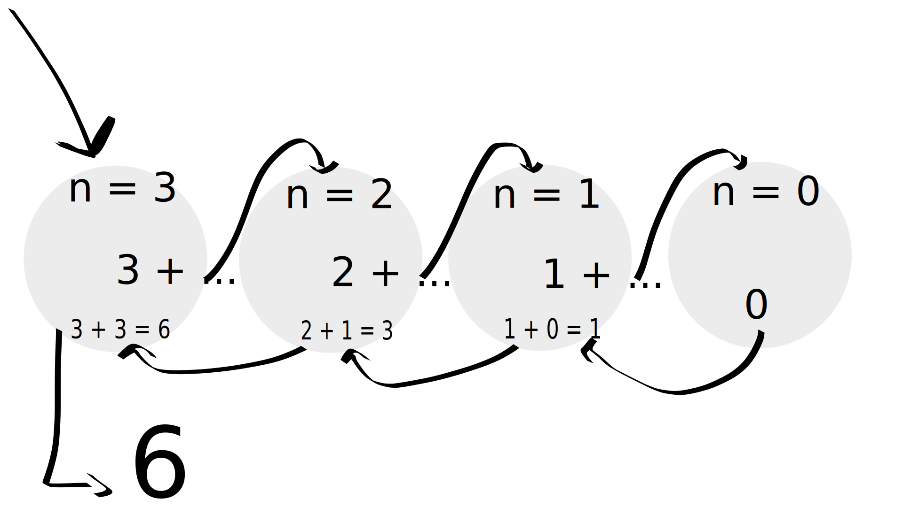

Récursivité
Avais-tu pensé à appeler la fonction dans laquelle tu étais ?
Voici un exemple :
#include <stdio.h>
unsigned int mystery(unsigned int n)
{
if (n == 0)
{
return 0;
}
return n + mystery(n - 1);
}
int main(void)
{
unsigned int value = 3;
unsigned int result = mystery(value);
printf("mystery(%u) = %u\n", value, result);
return 0;
}
Arrives-tu à déterminer ce que fait cette fonction ?
Elle somme l'ensemble des nombres dans l'intervalle [0;n].
En effet, la fonction va sans cesse se rappeler en décrémentant n de 1 jusqu'à arriver à 0.
Voilà ce qu'il se passe en mémoire avec n = 3.

\[ 3 + 2 + 1 + 0 = 6 \]
Prenons un autre exemple extrêmement simple :
#include <stdio.h>
void counter(unsigned int n)
{
printf("%u\n", n);
if (n == 0)
{
return;
}
counter(n - 1);
}
int main(void)
{
counter(10);
return 0;
}
Avec n = 10, ça crée un compteur qui va de 10 à 0.
$ gcc test.c -o mon_super_programme
$ ./mon_super_programme
10
9
8
7
6
5
4
3
2
1
0
$
Il faut faire attention à une chose avec la récursivité : la condition d'arrêt.
Dans les deux exemples ci-dessus, on vérifie toujours le cas où n == 0. Si la condition est vraie, on quitte la fonction. Dans le cas contraire, on rappelle la fonction avec n qui décrémente de 1.
Si tu ne mets pas de condition d'arrêt, tu vas partir en récursion infinie, et avoir ce qu'on appelle un stack overflow.
Je te laisse essayer ce bout ce code qui n'a pas de condition d'arrêt :
#include <stdio.h>
void counter(unsigned int n)
{
printf("%u\n", n);
counter(n - 1);
}
int main(void)
{
counter(10);
return 0;
}
A chaque appel de la fonction counter, la mémoire recrée une zone mémoire pour la nouvelle fonction appelée, qui est une stack. Ta mémoire n'étant pas infinie, quand elle n'a pas de place pour une nouvelle stack, le programme crash avec un stack overflow.
Tu verras pendant ta Piscine d'autres cas d'utilisation de la récursivité. Sache que c'est utile pour résoudre des gros problèmes en découpant un problème en sous-problème et en itérant dessus.
La récursivité a l'avantage d'être plus élégante mais a le défaut d'être plus lente qu'une boucle à l'exécution car à chaque rappel de la fonction, se créé en mémoire tout le contexte nécessaire pour créer une fonction, et à la fin de la récursion, il faut remonter tous les appels effectués pour revenir au point de départ. Si tu fais des récursions sur des milliers et milliers de nombres, tu perdras rapidement en efficacité.
Voici par exemple, la fonction d'Ackermann :
#include <stdlib.h>
#include <stdio.h>
int ackermann(int m, int n)
{
if (m == 0)
{
return n + 1;
}
if (m > 0 && n == 0)
{
return ackermann(m - 1, 1);
}
if (m > 0 && n > 0)
{
return ackermann(m - 1, ackermann(m, n - 1));
}
}
int main(int argc, char *argv[])
{
if (argc != 3)
return 1;
int m = atoi(argv[1]);
int n = atoi(argv[2]);
int a = ackermann(m, n);
printf("ackermann(%d, %d) = %d\n", m, n, a);
return 0;
}
$ gcc test.c -o mon_super_programme
$ time ./mon_super_programme 3 14
ackermann(3, 14) = 131069
./ackermann 3 14 69.22s user 0.56s system 98% cpu 1:10.59 total
$
La fonction met 69 secondes à s'exécuter sur ma machine.